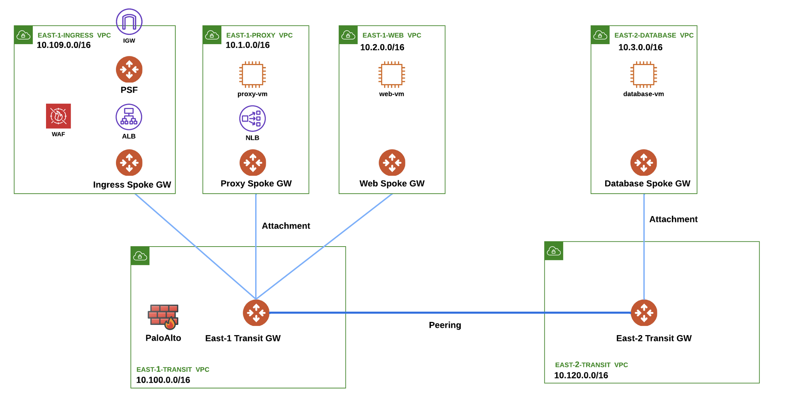
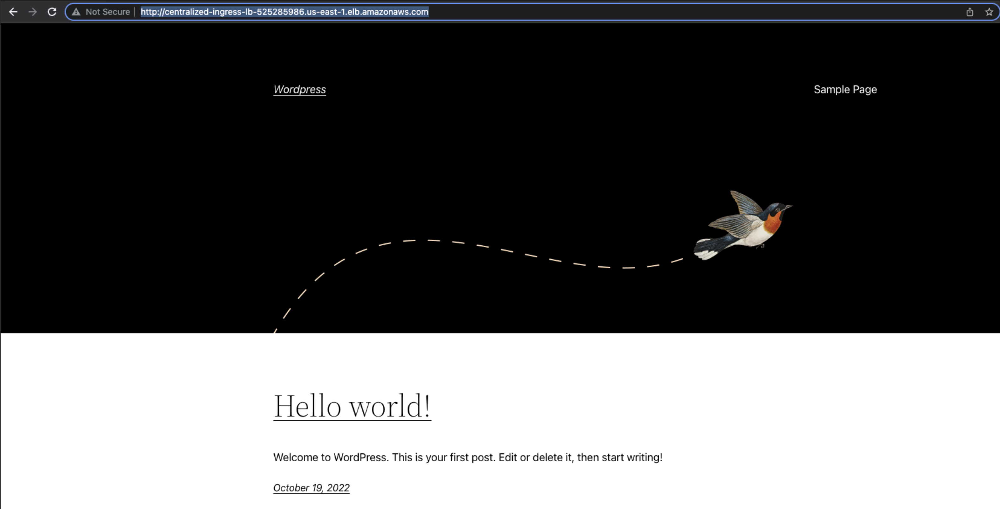

Welcome to ACE Operations “Let’s Troubleshoot Together” Session#
The objective behind this section is to collaborate together on a pre-built scenario to put in practice some of the troubleshooting techniques and tools you have learned and benefit from the real power of the Aviatrix platform.
1 - Initial Scenario#
The lab topology can be found below:
 Figure 1: Initial Topology
1.1. - Notes#
A few notes on the scenario are here:
This is an ingress scenario i.e. we have a Wordpress application that we want to publish to the world.
The application consists of 3 components Proxy VM, Web Server VM & Database VM.
The ALB, the Proxy VM and the Web Server VM reside in us-east-1 region (N. Virginia).
The Database VM resides in us-east-2 region (Ohio).
The setup exists in AWS but the same logic and methodology can be followed in other CSPs.
Public Subnet Filtering Gateway (PSF) is used at the edge of the Ingress VPC to protect any communication from malicious IP addresses.
External User will communicate with the Public IP address corresponding to the ALB.
ALB will basically terminate the connection and create another connection. Recall that the ALB does SNAT.
The target of the ALB is the NLB. Thus the traffic flow will now be from the ALB’s private IP to the NLB’s private IP.
FireNet is also part of the scenario whereby you have to ensure that any traffic between any of the VPCs can be subjected to inspection!
The Security team has confirmed that the policies on the PaloAlto FW are all correct, therefore you do not need to check its configuration!
1.2. - Requirements#
Time to complete is 90 minutes.
One volunteer of the team should share the screen and navigate through the Controller and CoPilot.
Use solely the CoPilot and the Controller.
The Wordpress application that is very critical to your business is broken! You are going to collaborate together to identify all the issues that are causing it to break.
Once the 90 minutes are done, the instructor will close the breakout rooms and each team will discuss their findings & learnings for ~ 10 minutes.
Once this is done, the instructor will highlight some of the key values that the Aviatrix Platform brings into troubleshooting and operating the setup.
1.3. - Wordpress is OK#
Important
If you succeed in fixing all the problems, this how the Wordpress app page would look like.
 Figure 2: Wordpress is OK